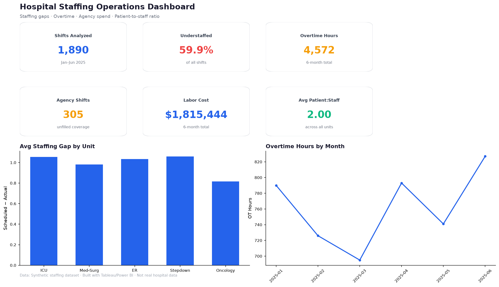
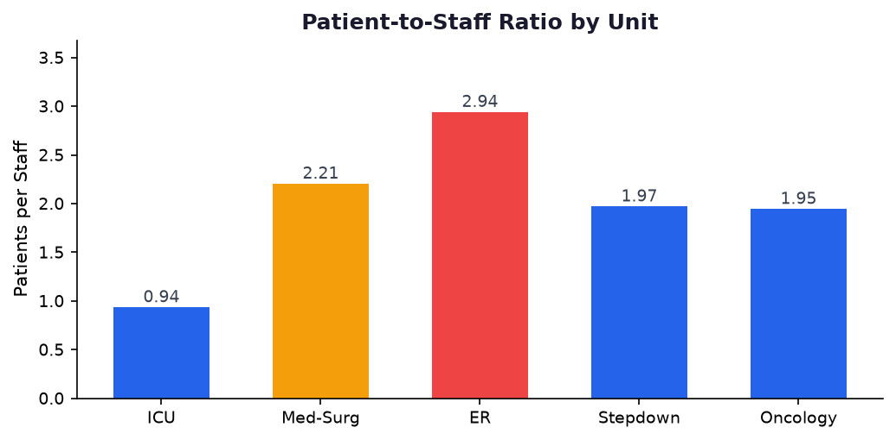
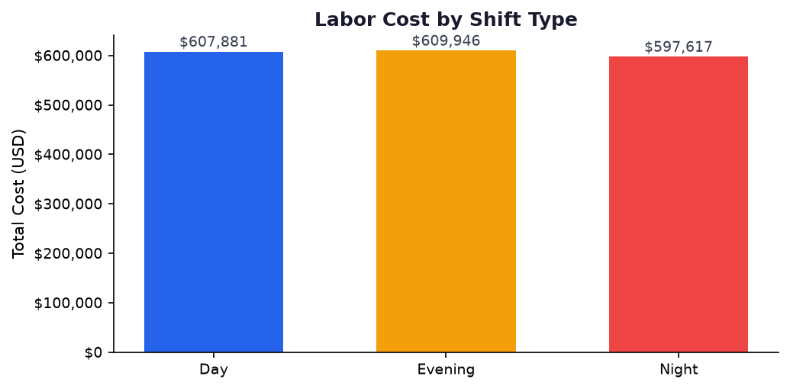

case study 04 · complete
Hospital staffing operations dashboard
Problem
Hospital operations leaders needed a single view of staffing health across five units. Shift supervisors and administrators were pulling data from multiple systems — scheduling, timekeeping, agency staffing, and patient census — making it hard to spot understaffing trends, overtime spikes, and agency spend in real time.
Data
Built on the same synthetic staffing dataset as the staffing operations analysis case study: 1,890 shifts across 5 units (ICU, Med-Surg, ER, Stepdown, Oncology) over 6 months (Jan–Jun 2025). Metrics include staffing gap, overtime hours, agency staff usage, patient census, and labor cost per shift.
Dashboard mockup designed for Tableau / Power BI. Synthetic data labeled clearly; not real hospital data.
Method
Dashboard designed in Tableau / Power BI with four layers:
- KPI strip. Top-row scorecards for total shifts, understaffed share, overtime hours, agency shifts, labor cost, and average patient-to-staff ratio.
- Unit comparison. Bar charts showing staffing gap and patient-to-staff ratio by unit, color-coded by severity.
- Time trends. Line chart of overtime hours by month to spot seasonal or scheduling-pattern spikes.
- Shift-type cost. Bar chart of labor cost by Day / Evening / Night shifts to identify where OT budget is concentrated.
Filters: unit, shift type, month. All measures calculated from shift-level source data using calculated fields and aggregations.
Dashboard mockup

Figure 1: Dashboard overview — KPI strip, staffing gap by unit, overtime trend, cost by shift type

Figure 2: Patient-to-staff ratio by unit — ER highest at 2.94

Figure 3: Labor cost by shift type — Evening shifts most expensive
Result
The dashboard consolidates six KPIs and three charts into one view, replacing manual multi-system reporting. Key insights visible at a glance:
- ER is the staffing pressure point. Highest patient-to-staff ratio (2.94) and most agency shifts (78).
- ICU drives overtime. Highest OT hours (979) across all units.
- Evening shifts cost the most. $609,946 in labor cost — highest of Day / Evening / Night.
Recommendations
- Set unit-level staffing targets based on the dashboard's baseline gaps.
- Add an overtime threshold alert (e.g., flag when weekly OT exceeds 800 hrs).
- Review ER baseline staffing and float-pool coverage given the 2.94 patient-to-staff ratio.
- Use the shift-type cost view to evaluate staggered start times for evening coverage.
Limitations
This is a static mockup of a Tableau / Power BI dashboard, not a live published dashboard. The underlying data is synthetic and labeled as such. Real deployment would connect to live scheduling, timekeeping, and HR systems with appropriate data governance and access controls.
← back to portfolio